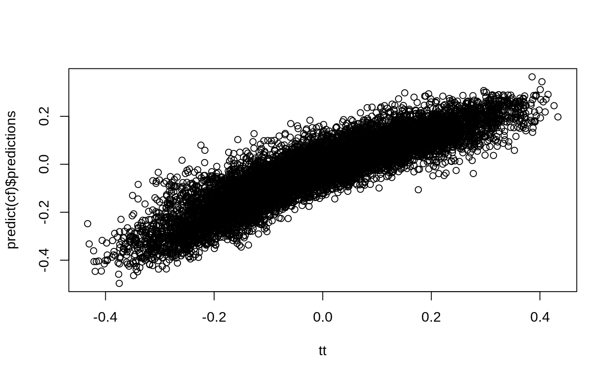
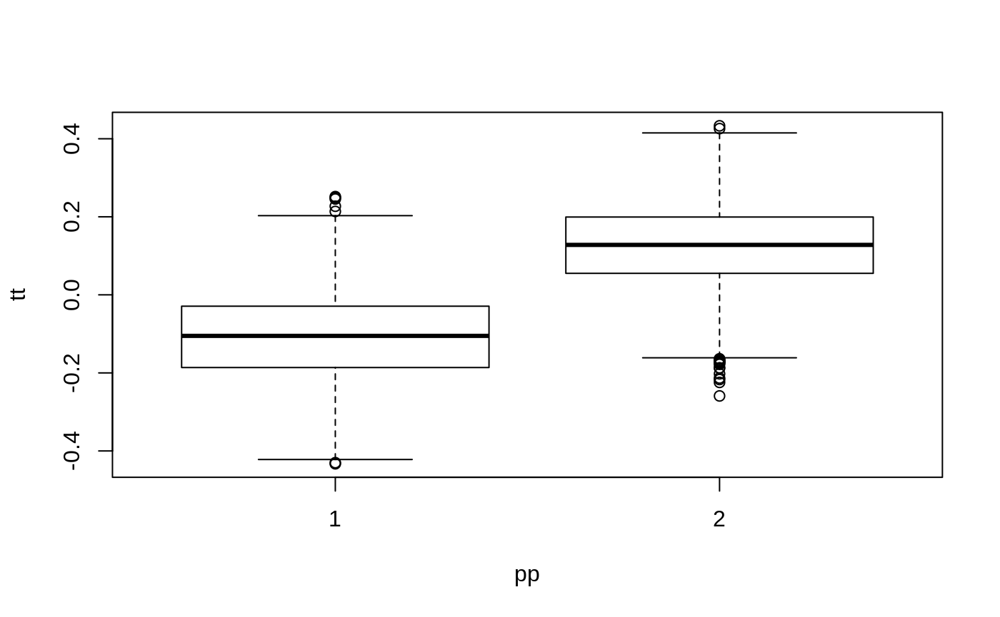
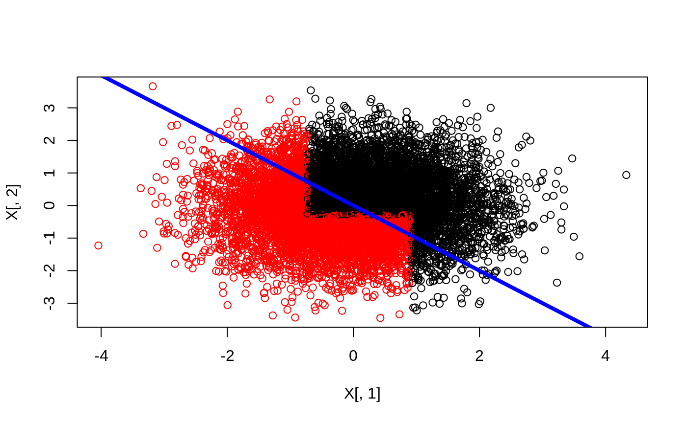
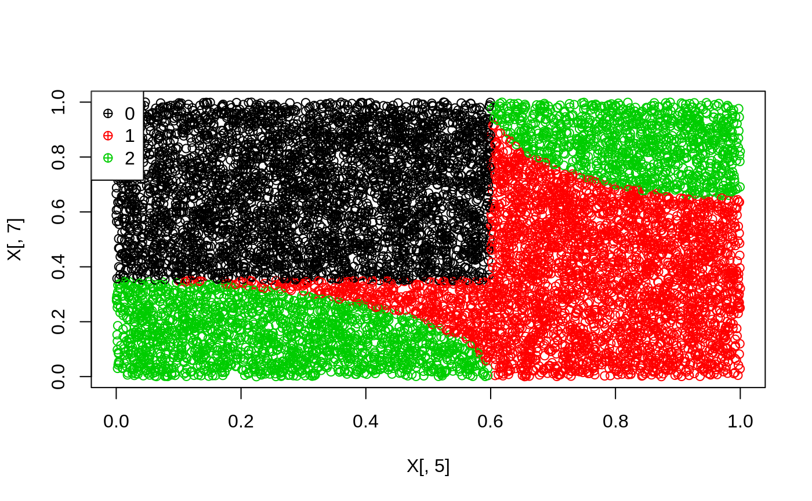
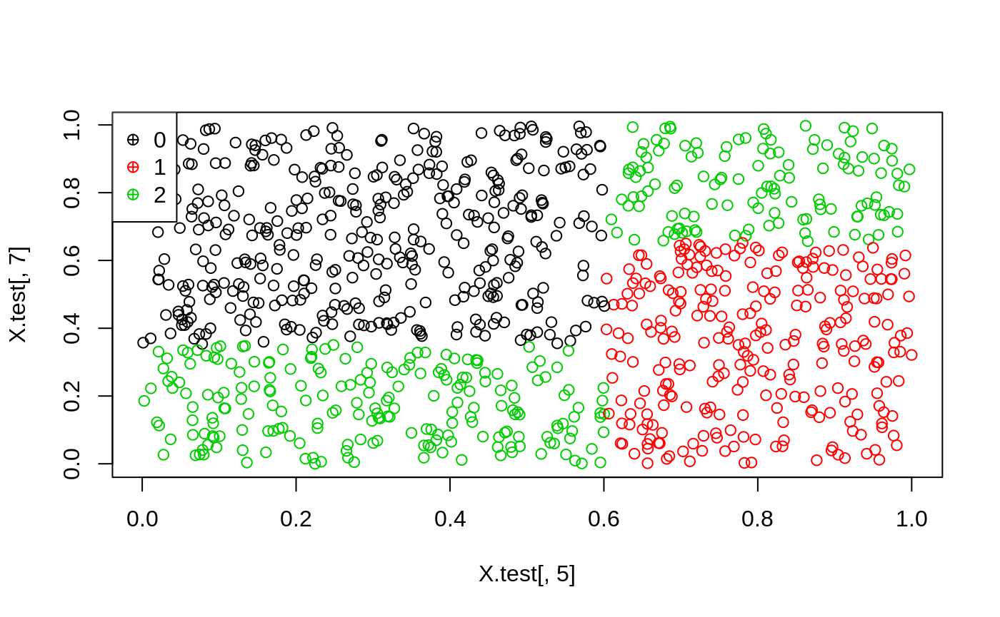

n <- 10000
p <- 10
X <- matrix(rnorm(n * p), n, p)
ee <- 1 / (1 + exp(X[, 3]))
tt <- 1 / (1 + exp((X[, 1] + X[, 2]) / 2)) - 0.5
W <- rbinom(n, 1, ee)
Y <- X[, 3] + W * tt + rnorm(n)
cf <- causal_forest(X, Y, W)
plot(tt, predict(cf)$predictions)
dr <- double_robust_scores(cf)
tree <- policy_tree(X, dr, 2)
tree
#> policy_tree object
#> Tree depth: 2
#> Actions: 1: control 2: treated
#> Variable splits:
#> (1) split_variable: X2 split_value: -0.286962
#> (2) split_variable: X1 split_value: 0.908086
#> (4) * action: 2
#> (5) * action: 1
#> (3) split_variable: X1 split_value: -0.729217
#> (6) * action: 2
#> (7) * action: 1
pp <- predict(tree, X)
boxplot(tt ~ pp)

The following example is from the 3-action DGP from section 6.4.1 in Zhou, Athey and Wager (2018)
n <- 10000
p <- 10
data <- gen_data_mapl(n, p)
head(data.frame(data)[1:6])
#> action Y X.1 X.2 X.3 X.4
#> 1 1 2.6284326 0.67222112 0.1911761 0.8306201 0.04823820
#> 2 2 -0.4104820 0.06268746 0.5293111 0.9005144 0.17141539
#> 3 0 2.5760171 0.96091759 0.2426804 0.8510604 0.81590389
#> 4 1 6.4251811 0.28812068 0.5097512 0.2848444 0.26683712
#> 5 1 -0.7418237 0.24016147 0.9975204 0.5635440 0.29509120
#> 6 2 -0.1215063 0.12274854 0.8569016 0.4839027 0.09840055
X <- data$X
Y <- data$Y
W <- data$action
multi.forest <- multi_causal_forest(X, Y, W)
# tau.hats:
head(predict(multi.forest)$predictions)
#> 0 1 2
#> 1 1.177906055 0.2784896 -1.4448715
#> 2 -0.006381234 0.2628373 -0.6495668
#> 3 -2.187757207 0.1182424 1.7764866
#> 4 -1.666133325 0.2639243 0.4286487
#> 5 1.134340943 0.2446484 -1.2117811
#> 6 1.138043852 0.3389450 -1.2256313
# Each region with optimal action
region.pp <- data$region + 1
plot(X[, 5], X[, 7], col = region.pp)
leg <- sort(unique(region.pp))
legend("topleft", legend = leg - 1, col = leg, pch = 10)
Cross-fitted Augmented Inverse Propensity Weighted Learning (CAIPWL) with the optimal depth 2 tree
Gamma.matrix <- double_robust_scores(multi.forest)
head(Gamma.matrix)
#> 0 1 2
#> 1 3.0257832 2.931355 0.9529542
#> 2 2.0307316 2.151694 -6.5086170
#> 3 8.5575962 1.528147 2.6735406
#> 4 0.1166687 11.393522 1.7103697
#> 5 3.0203723 -2.801610 1.1535616
#> 6 2.7478501 1.979792 -3.6002767
train <- sample(1:n, 9000)
opt.tree <- policy_tree(X[train, ], Gamma.matrix[train, ], depth = 2)
opt.tree
#> policy_tree object
#> Tree depth: 2
#> Actions: 1: 0 2: 1 3: 2
#> Variable splits:
#> (1) split_variable: X5 split_value: 0.601712
#> (2) split_variable: X7 split_value: 0.35235
#> (4) * action: 3
#> (5) * action: 1
#> (3) split_variable: X7 split_value: 0.65207
#> (6) * action: 2
#> (7) * action: 3
plot(opt.tree)Predict treatment on held out data
X.test <- X[-train, ]
pp <- predict(opt.tree, X.test)
head(pp)
#> [1] 3 3 1 1 2 2
plot(X.test[, 5], X.test[, 7], col = pp)
leg <- sort(unique(pp))
legend("topleft", legend = leg - 1, col = leg, pch = 10)
The following example is from section 5.2 in Wager and Athey (2017).
n <- 500
data <- gen_data_epl(n, type = "continuous")
head(data.frame(data))[1:6]
#> W Z tau Y X.1 X.2
#> 1 0 1 -0.50000000 3.4662060 -0.13701966 -1.59064506
#> 2 1 1 -0.07788149 0.5532977 -0.84836207 0.84423702
#> 3 0 0 0.17925500 1.4832753 1.02471100 0.33379899
#> 4 0 1 -0.50000000 1.1881457 -0.04921944 -0.85043640
#> 5 1 1 0.09894633 3.1677820 0.32794872 0.86994393
#> 6 0 1 -0.45727715 -0.6397086 -0.79551953 0.08544569
iv.forest <- grf::instrumental_forest(X = data$X, Y = data$Y, W = data$W, Z = data$Z)
gamma <- double_robust_scores(iv.forest)
head(gamma)
#> control treated
#> [1,] -2.4654822 2.4654822
#> [2,] -0.9214954 0.9214954
#> [3,] 0.6085216 -0.6085216
#> [4,] -0.7853744 0.7853744
#> [5,] -2.8589141 2.8589141
#> [6,] 4.3747435 -4.3747435Find the depth-2 tree which solves (2):
train <- sample(1:400)
tree <- policy_tree(data$X[train, ], gamma[train, ])
tree
#> policy_tree object
#> Tree depth: 2
#> Actions: 1: control 2: treated
#> Variable splits:
#> (1) split_variable: X4 split_value: 0.169516
#> (2) split_variable: X1 split_value: 0.503502
#> (4) * action: 1
#> (5) * action: 2
#> (3) split_variable: X1 split_value: -0.389985
#> (6) * action: 2
#> (7) * action: 1Evaluate the policy on held out data:
The amortized runtime of the exact tree search is \(O(p^k n^{k-1} (log n + d) + pnlog n)\) where \(p\) is the number of features, \(d\) the number of treatments, \(n\) the number of observations, and \(k\) the tree depth.
For a depth two tree this is \(O(p^2 n (log n + d))\) (ignoring the last term which is a global sort done at the beginning) meaning that it scales log-linearly (\(nlogn\)) with the number of observations, i.e. if you double the number of observations, the search will take at least four times as long.
For a depth three tree it is \(O(p^3 n^2 (log n + d))\). If a depth two tree with 1000 observations, 4 features and 3 actions took around 0.18 seconds, you can expect the level three tree to take approximately \(1000\cdot 4\) times as long (\(\approx \frac{p^3n^2}{p^2n}=pn\))
The runtime above is with continuous features. There are considerable time savings when the features are discrete. In the extreme case with all binary observations, the runtime will be practically linear in n.